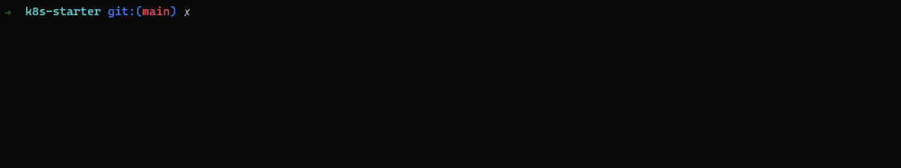

Now, let's see what we got so far
Web content
Webserver
Docker image
Now we only need to get it on kubernetes. Therefore, we need 2 things if we want to do it kind of
right.
-
a
deployment that runs our image
- a
service that shows us how to access it
The
deployment can define a awful lot of things, but if you break it down to the core
things you need to start, it's pretty straight forward. Let's have a look at the
deployment.yml
The
service is required to let kubernetes know what it needs to wire together. Let's
have a look at the
service.yml
Now as we know what we want to put on kubernetes, lets explore one way to do it. As we already build
the yml files, we can directly apply them to our cluster.
kubectl apply -f .
The -f says we want to deploy a file, but you can also select the whole directory, and kubernetes
will check what is actually a kubernetes yaml and then deploys them.
Now it would be great to know what is happening on the server.
kubectl get deployments shows us all deployments on the server (in the current
namespace). Depending on the version of your setup, other words also work like "deploy" as a short
cut or deployments.apps as a fully qualified resource definition.
kubectl get pods shows us all "containers" that are running or should be running
kubectl get pods | grep kiss shows us all "containers" that contain somewhere
"kiss"
kubectl get pods --watch | grep kiss updates the output whenever something
changes

If you also want to see what our service does or what port we use now:
kubectl get svc kiss-service
Finally we can also have a look at the live logs on kubernetes inside our pod:
kubectl logs -f kiss-deployment-74745f88d-lqjgf